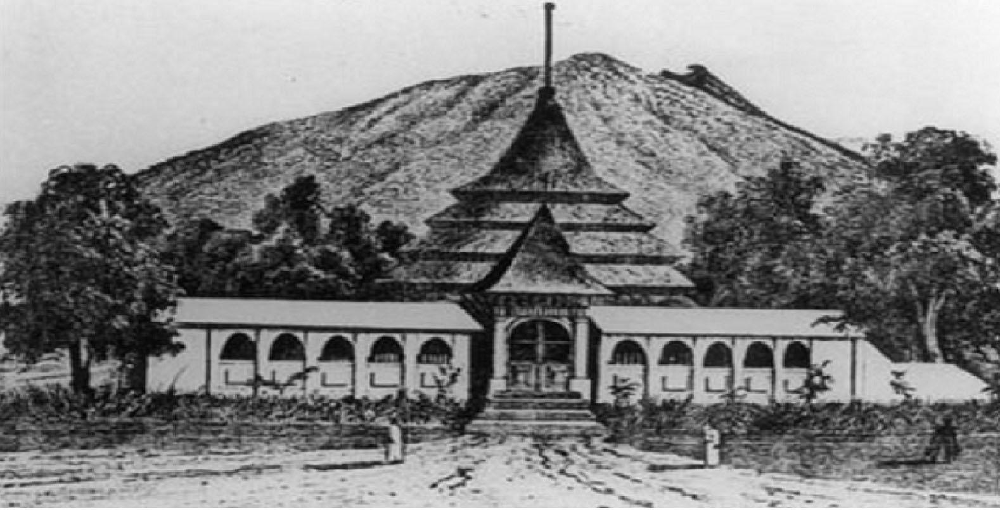
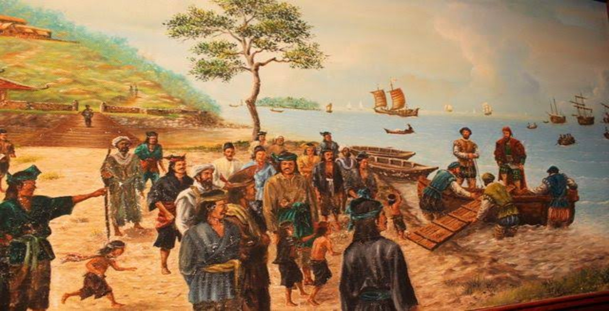
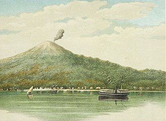
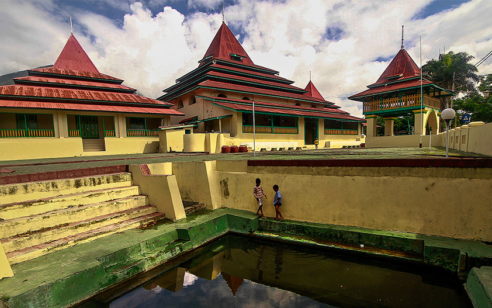
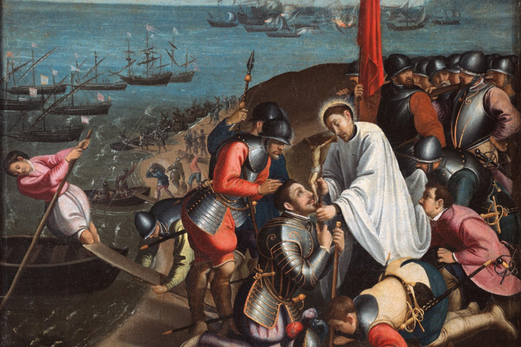

Perlawanan Kesultanan Ternate terhadap Portugis
Kesultanan Ternate
Kesultanan Ternate atau juga dikenal dengan Kerajaan Gapi adalah salah satu dari 4 kerajaan Islam di Kepulauan Maluku dan merupakan salah satu kerajaan Islam tertua di Nusantara. Didirikan oleh Baab Mashur Malamo pada tahun 1257.
Src img : The Indonesian
Asal usul pembentukan
Pulau Gapi (kini Ternate) mulai ramai di awal abad ke-13. Penduduk Ternate awal merupakan warga eksodus dari Halmahera. Awalnya di Ternate terdapat 4 kampung yang masing-masing dikepalai oleh seorang momole (kepala marga). Merekalah yang pertama–tama mengadakan hubungan dengan para pedagang yang datang dari segala penjuru mencari rempah–rempah. Penduduk Ternate makin heterogen dengan bermukimnya pedagang Arab, Jawa, Melayu dan Tionghoa. Oleh karena aktivitas perdagangan yang makin ramai ditambah ancaman yang sering datang dari para perompak maka atas prakarsa Momole Guna pemimpin Tobona diadakan musyawarah untuk membentuk suatu organisasi yang lebih kuat dan mengangkat seorang pemimpin tunggal sebagai raja.
Tahun 1257 Momole Ciko pemimpin Sampalu terpilih dan diangkat sebagai kolano (raja) pertama dengan gelar Baab Mashur Malamo (1257-1272). Kerajaan Gapi berpusat di kampung Ternate, yang dalam perkembangan selanjutnya makin besar dan ramai sehingga oleh penduduk disebut juga sebagai Gam Lamo atau kampung besar (belakangan orang menyebut Gam Lamo dengan Gamalama). Semakin besar dan populernya Kota Ternate, sehingga kemudian orang lebih suka mengatakan kerajaan Ternate daripada kerajaan Gapi. Di bawah pimpinan beberapa generasi penguasa berikutnya, Ternate berkembang dari sebuah kerajaan yang hanya berwilayahkan sebuah pulau kecil menjadi kerajaan yang berpengaruh dan terbesar di bagian timur Indonesia khususnya Maluku.
Src img : Kumparan
Unifikasi Persekutuan Maluku
Selain Ternate, di Maluku juga terdapat paling tidak 3 kerajaan lain yang memiliki pengaruh yaitu Kesultanan Tidore, Kesultanan Jailolo, dan Kesultanan Bacan. Kerajaan–kerajaan ini merupakan saingan Ternate dalam memperebutkan hegemoni di Maluku. Berkat perdagangan rempah Ternate menikmati pertumbuhan ekonomi yang mengesankan, dan untuk memperkuat hegemoninya di Maluku, Ternate mulai melakukan ekspansi. Hal ini menimbulkan antipati dan memperbesar kecemburuan kerajaan lain di Maluku yang memandang Ternate sebagai musuh bersama hingga memicu terjadinya perang.
Demi menghentikan konflik yang berlarut–larut, sultan Ternate ke-7 Kolano Cili Aiya atau disebut juga Kolano Sida Arif Malamo (1322-1331) mengundang raja–raja Maluku yang lain untuk berdamai dan bermusyawarah membentuk persekutuan. Persekutuan ini kemudian dikenal sebagai Persekutan Moti atau Motir Verbond. Butir penting dari pertemuan ini selain terjalinnya persekutuan adalah penyeragaman bentuk kelembagaan kerajaan di Maluku. Oleh karena pertemuan ini dihadiri 4 raja Maluku yang terkuat maka disebut juga sebagai persekutuan Moloku Kie Raha (Empat Gunung Maluku).
Src img : wikipedia
{kind=link}
Kedatangan Islam
Tak ada sumber yang jelas mengenai kapan awal kedatangan Islam di Maluku Utara khususnya Ternate. Namun diperkirakan sejak awal berdirinya kerajaan Ternate masyarakat Ternate telah mengenal Islam mengingat banyaknya pedagang Arab yang telah bermukim di Ternate kala itu. Beberapa raja awal Ternate sudah menggunakan nama bernuansa Islam namun kepastian mereka maupun keluarga kerajaan memeluk Islam masih diperdebatkan. Hanya dapat dipastikan bahwa keluarga kerajaan Ternate resmi memeluk Islam pertengahan abad ke-15.
Kolano Marhum (1465-1486), penguasa Ternate ke-18 adalah raja pertama yang diketahui memeluk Islam bersama seluruh kerabat dan pejabat istana. Pengganti Kolano Marhum adalah puteranya, Zainal Abidin (1486-1500). Beberapa langkah yang diambil Sultan Zainal Abidin adalah meninggalkan gelar kolano dan menggantinya dengan sultan, Islam diakui sebagai agama resmi kerajaan, syariat Islam diberlakukan, dan membentuk lembaga kerajaan sesuai hukum Islam dengan melibatkan para ulama. Langkah-langkahnya ini kemudian diikuti kerajaan lain di Maluku secara total, hampir tanpa perubahan. Ia juga mendirikan madrasah yang pertama di Ternate. Sultan Zainal Abidin pernah memperdalam ajaran Islam dengan berguru pada Sunan Giri di pulau Jawa. Di sana dia dikenal sebagai Sultan Bualawa (Sultan Cengkih).
Src img : Wikipedia
{kind=link}
Kedatangan Portugal dan Perang Saudara
Pada masa pemerintahan Sultan Bayanullah (1500-1521), Ternate semakin berkembang, rakyatnya diwajibkan berpakaian secara islami, teknik pembuatan perahu dan senjata yang diperoleh dari orang Arab dan Turki digunakan untuk memperkuat pasukan Ternate. Pada masa ini pula datang orang Eropa pertama di Maluku, Loedwijk de Bartomo (Ludovico Varthema) tahun 1506.
Tahun 1512 Portugal untuk pertama kalinya menginjakkan kaki di Ternate dibawah pimpinan Fransisco Serrao, atas persetujuan sultan, Portugal diizinkan mendirikan pos dagang di Ternate. Portugal datang bukan semata–mata untuk berdagang melainkan untuk menguasai perdagangan rempah–rempah, pala dan cengkih di Maluku. Untuk itu terlebih dulu mereka harus menaklukkan Ternate.
Sultan Bayanullah wafat meninggalkan pewaris-pewaris yang masih sangat belia. Janda sultan, permaisuri Nukila dan Pangeran Taruwese, adik almarhum sultan bertindak sebagai wali. Permaisuri Nukila yang asal Tidore bermaksud menyatukan Ternate dan Tidore dibawah satu mahkota yakni salah satu dari kedua puteranya, Pangeran Hidayat (kelak Sultan Dayalu) dan pangeran Abu Hayat (kelak Sultan Abu Hayat II). Sementara pangeran Tarruwese menginginkan tahta bagi dirinya sendiri.
Portugal memanfaatkan kesempatan ini dan mengadu domba keduanya hingga pecah perang saudara. Kubu permaisuri Nukila didukung Tidore sedangkan pangeran Taruwese didukung Portugal. Setelah meraih kemenangan pangeran Taruwese justru dikhianati dan dibunuh Portugal. Gubernur Portugal bertindak sebagai penasihat kerajaan dan dengan pengaruh yang dimiliki berhasil membujuk dewan kerajaan untuk mengangkat pangeran Tabariji sebagai sultan. Tetapi ketika Sultan Tabariji mulai menunjukkan sikap bermusuhan, ia difitnah dan dibuang ke Goa, India. Di sana ia dipaksa Portugal untuk menandatangani perjanjian menjadikan Ternate sebagai kerajaan Katolik dan vasal kerajaan Portugal, tetapi perjanjian itu ditolak mentah-mentah oleh Sultan Khairun (1534-1570).

Src img : POPMAMA.com
Pengusiran Portugal
Perlakuan Portugal terhadap saudara–saudaranya membuat Sultan Khairun geram dan bertekad mengusir Portugal dari Maluku. Tindak–tanduk bangsa Barat yang satu ini juga menimbulkan kemarahan rakyat yang akhirnya berdiri di belakang Sultan Khairun. Sejak masa sultan Bayanullah, Ternate telah menjadi salah satu dari tiga kesultanan terkuat dan pusat Islam utama di Nusantara abad ke-16 selain Aceh dan Demak setelah kejatuhan Malaka pada tahun 1511. Ketiganya membentuk Aliansi Tiga untuk membendung sepak terjang Portugal di Nusantara.
Tak ingin menjadi Malaka kedua, sultan Khairun mengobarkan perang pengusiran Portugal. Kedudukan Portugal kala itu sudah sangat kuat, selain memiliki benteng dan kantong kekuatan di seluruh Maluku mereka juga memiliki sekutu–sekutu suku pribumi yang bisa dikerahkan untuk menghadang Ternate. Dengan adanya Aceh dan Demak yang terus mengancam kedudukan Portugal di Malaka, Portugal di Maluku kesulitan mendapat bala bantuan hingga terpaksa memohon damai kepada Sultan Khairun. Secara licik gubernur Portugal, Lopez de Mesquita mengundang Sultan Khairun ke meja perundingan dan akhirnya dengan kejam membunuh sultan yang datang tanpa pengawalnya.
Pembunuhan Sultan Khairun semakin mendorong rakyat Ternate untuk mengusir Portugal, bahkan seluruh Maluku kini mendukung kepemimpinan dan perjuangan Sultan Baabullah (1570-1583), pos-pos Portugal di seluruh Maluku dan wilayah timur Indonesia digempur. Setelah peperangan selama 5 tahun, akhirnya Portugal meninggalkan Maluku untuk selamanya pada tahun 1575. Di bawah pimpinan Sultan Baabullah, Ternate mencapai puncak kejayaan, wilayah membentang dari Sulawesi Utara dan Tengah di bagian barat hingga Kepulauan Marshall di bagian timur, dari Filipina Selatan di bagian utara hingga kepulauan Nusa Tenggara di bagian selatan.
Sultan Baabullah dijuluki penguasa 72 pulau yang semuanya berpenghuni hingga menjadikan Kesultanan Ternate sebagai kerajaan Islam terbesar di Indonesia timur, di samping Aceh dan Demak yang menguasai wilayah barat dan tengah Nusantara kala itu. Periode keemasaan tiga kesultanan ini selama abad 14 dan 15 entah sengaja atau tidak dikesampingkan dalam sejarah bangsa ini padahal mereka adalah pilar pertama yang membendung kolonialisme Barat.
Src img : kompas.com